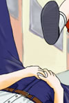
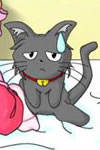
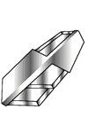

リレー小説『天使のお仕事 —The Angelic Calling —』は、少年少女文庫１００万Ｈｉｔ記念合作イラスト『天使のお仕事』と同時進行で、「文庫」作家有志の手により企画・製作されたオフィシャル・ストーリーです。
「片思いに悩む少年が女の子に変身し（させられ）、憧れの彼女とひとつ屋根の下で生活する」といった基本コンセプトに各種設定を加味し、イラストの完成を受けて起承転結各担当者がそれぞれ執筆を開始しました。
基本的には、各作家さんの手による一話完結の連続ストーリーです。
『天使のお仕事 —The Angelic Calling —』メインキャラクター紹介
| 進藤伊織（男 １７歳 一人称「おれ」） | |
| 本編主人公。都立天ヶ丘（あまがおか）高校の二年生。クラスメイトの早川真織に片思い中。 考えるよりも先に身体が動くタイプだが、純情な性格で女の子に対してはつい身構えてしまう。本人は気付いていないが、結構まわりに乗せられやすい。 クラスの女子の受けもそこそこ悪くはないのだが、上記の理由で特定の女の子と付き合ったことはない。 |
 |
早川伊織（女 １７歳 一人称「おれ／あたし」）
|
| 女の子になった伊織。真織の家に従姉妹として下宿し、元のクラスに転校生としておさまる。 天使としての名は『イオ・リンク』。ショートカットのボーイッシュな美少女……に見える。 “想いを現実にする力”を持つが、普段できることはせいぜい十円玉を手を触れずに動かすことができる程度。 クラスメイトや真織の家族からは「伊織ちゃん」と呼ばれている。 |
| 早川真織（女 １７歳 一人称「あたし」） |  |
| 神社の一人娘。才色兼備でクラスのアイドル的存在。 優等生然とした自分の殻を感じているが故に、「従姉妹の」伊織のボーイッシュさにあこがれている。 実は寂しがり屋で甘えん坊。女伊織とは幼い頃から仲良しだったという記憶を持っているため、女の子同士の気安い関係にもつい拍車がかかる。 |
 |
笹島瑞樹（女 １７歳 一人称「あたし」）
|
| 伊織の幼なじみ。応援団所属（非チアガール）で、颯爽とした姉御っぷりは女伊織とは違う意味でボーイッシュ。 男伊織が自然に接することができた数少ない女の子であるが、寄るといつも喧嘩ばかり。 潜在的に神力に対する適性が高く、本来天使パラレルは彼女に協力を求めていた。 ひそかな悩みは女伊織よりずっと小さな胸。 |
| 芹沢秀一（男 １７歳 一人称「俺」 | |
| 少々口下手な嫌いはあるが、ひたむきにサッカーに打ち込む好青年。 サッカー部のキャプテンにしてゴールマウスを守る鉄壁の守護神…………だったのだが、瑞樹に恋をしたのが運の尽き。男に興味のキの時もない瑞樹にこっぴどく振られて自信喪失中。 ちなみに伊織の見解は、「瑞樹なんかとくっつけたらヤツは二度と立ち直れなくなる」 |
 |
藤本幸也（男 １７歳 一人称「僕」）
|
| 伊織のクラスメイト。校内一のナンパ男で、自称博愛主義者。 出会った女の子には、片っ端から声をかけているとさえ言われている。 当然女伊織や真織にも毎日のように言い寄って来るが、持ち前の明るいキャラクターのおかげで憎まれない、得なヤツである。 |
| パラレル・リンク（女 ？歳 一人称「わたくし」） | |
| 犯罪的な天然ボケを誇る脳天気天使。見た目は優雅な女性で、間延びしたお嬢様言葉を使う。 今回の『仕事』で成果が上がらなければ格下げという危機的状況。しかし本人はそれを気に病む様子もなく、ひたすらマイペース。まきぞえを食った伊織（下手すると男に戻れなくなる）だけがひとり気をもんでいる。 普段は男伊織に化けて、身代わりをつとめている。 |
 |
シリアル・リンク（雄 ？歳 一人称「ボク」）
|
| 黒猫の姿をしたパラレルのファミリア……というより、お目付兼サポート役。 人語を解し、いささか皮肉っぽい口調でしゃべる。パラレルのマイペースぶりや、伊織の間の悪さにはほとほと呆れているが、基本的に律儀で任務に忠実（？）な性格。 普段は早川家のペットとして、女伊織と行動を共にしている。 |
| アイテム・天使のヘアクリップ |  |
| ぱっと見にはなんの変哲もない、銀色の髪留め。 これを付けていると、伊織の口調、仕種、感覚などが女の子のものに置き換えられる。 しかし長時間付けていると男としての記憶や感情が失われてしまうという、少々やばい代物。 また、パラレルとのテレパシー（？）通信機としての役割もある。 |